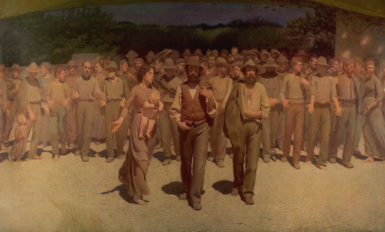
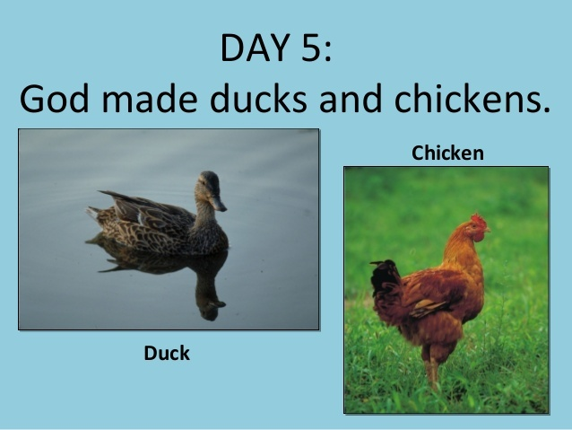

chapter12.3--handout
Background Information
Bill讽刺的Bryan是何许人？
Jake和Bill在吃午餐的时候提到了一个刚刚过世名为Bryan的人物："First the egg," said Bill. "Then the chicken. Even Bryan could see that." "He's dead. I read it in the paper yesterday."（“先来个鸡蛋，”比尔说。“然后吃鸡。这个道理连布莱恩都明白。”）
并且还拿他调侃了一番："I reverse the order. For Bryan's sake. As a tribute to the Great Commoner. First the chicken; then the egg."（“我来颠倒一下。为了布莱恩。为了向这位伟大的‘平民’表示敬意。先吃鸡，然后吃鸡蛋。”）
如果对这位人物以及他的事迹没有了解，这一段会看得云里雾里（大量引用穿插写作时的真实社会背景也是海明威的风格之一，增添故事真实性的同时也让角色刻画更加饱满）。
首先来看一下这个人的身份背景：威廉·詹宁斯·布赖恩（William Jennings Bryan）（1860年3月19日 - 1925年7月26日）是美国民主党（Democratic Party）和平民党（Populist Party）的领袖，也是一位颇有吸引力的演说家（orator）, 但他1896年、1900年、1908年三次竞选总统均未成功。
由于生长在伊利诺伊州（Illinois）, 也就是美国的中西部，布莱恩在一生当中最重要的政治立场之一就是支持农民的利益，而反对东部城市的利益。比如他所在的平民党就是以保护平民，尤其是农民利益为诉求的。因此他也被称为“The Great Commoner”（commoner即“平民”，和nobleman“贵族”相对）。

Bill在这里对布莱恩的调侃和布莱恩一生中的最后一个“公案”有关：布莱恩因为坚决主张对《圣经》作实事求是的解释，于是前往田纳西州的代顿城协助审理对一位教师的控诉案。这位生物教师被指控讲授达尔文主义成人的进化起源（teaching evolution in public school），而不讲上帝造人。最后被告败诉，这位生物老师被裁决有罪并罚款（后被驳回）。当年7月26日（1925年），在该案结束后没几天，布莱恩就因为在这场法庭战斗中耗费过多精力以及情绪过于激动，于是在睡梦中病逝。
那么Bill为什么又说为了布莱恩他们要先吃鸡再吃蛋呢？这里牵扯到了“先有鸡还是先有蛋”这个问题——如果要用《圣经》来解释，那么肯定是先有鸡，因为上帝先创造的是鸡而不是鸡蛋（“神说，水要多多滋生有生命的物，要有雀鸟飞在地面以上，天空之中。”《创世纪》第一章）。
虽然圣经原文没有明确提及“鸡”这种生物，但用到了bird这个词，bird其实就包含了鸟类和禽类。如果要布莱恩回答这个问题，他肯定会看一本正经地指着圣经上的字告诉别人是先有鸡。

虽然先吃鸡还是先吃蛋跟先有鸡还是先有蛋这个问题一点关系都没有，但Bill为了讽刺布莱恩对待《圣经》过于咬文嚼字和追求事实（最后还把自己给累死了……），所以提出向他“致敬”，先吃鸡再吃蛋。
Vocabulary
filthy
adj. 下流的；肮脏的（disgustingly dirty; obscene or offensive）
糟糕的（nasty）
原文："That's not such filthy wine," Bill said.
“这酒不那么难喝，”比尔说。
💧filth 作为名词本身指“污秽之物”（a disgusting amount of dirt）, 还可以表示“下流话”（very offensive language）.
💧filthy 除了可以表示和以上两个义项有关的含义，还可以指“令人不悦的”（extremely unpleasant），比如糟糕的天气就可以说filthy weather.
moisture
n. 水分；湿气（small amounts of water that are present in the air, in a substance, or on a surface）
原文：Moisture beaded on the bottles as I walked back to the trees.
等我回头走到树下，瓶子外面已经结满了水珠。
💧moisture 在这里指“水汽”，它的形容词形式是moist，表示“潮湿的”（damp, wet）, 比如：Her eyes were moist (= she was almost crying) .
她的眼睛湿润了。
Crush Your Problems
1、"You're not holding out on me?"
“你不是瞒着我吧？”
💧表达精讲
hold out on sb 表示“向某人隐瞒（事情，金钱）”（to keep something from sb, especially information or money）. 比如：She must have been holding out on him all these years.（这些年来她肯定一直瞒着他。）
2、"Let us rejoice in our blessings. Let us utilize the fowls of the air. Let us utilize the product of the vine. Will you utilize a little, brother?"
“让我们为上帝的赐福而欢欣吧。让我们享用空中的飞禽。让我们享用葡萄园的出产。你不享用一点儿吗，兄弟？”
💧表达精讲
rejoice in our blessings, the fowls of the air（飞禽）, the product of the vine（葡萄酒） 其实都是对《圣经》里的句子的化用哦~ 所以这里Bill依然是带着调侃的语气（见背景知识的分析）。
3、Let us not pry into the holy mysteries of the hencoop with simian fingers.
我们不要用猿猴的爪子伸到母鸡窝里去刺探神圣的奥秘。
💧表达精讲
①pry into 表示“（冒昧）打探”（to try to find out details in an impolite way），比如：We do not want people prying into our affairs.（我们不想让人刺探我们的私事。）
②hencoop 指“家禽笼”（a cage for poultry）, hen表示“母鸡”，所以这里翻译为“母鸡窝”也是可以的，而且这一句话还和上文紧密相连：所谓的“母鸡窝里神圣的奥秘”（the holy mysteries of the hencoop）也就是“到底是先有鸡还是先有蛋”这个问题；
③with simian fingers “用猿猴的爪子”，simian表示“猿猴的，类人猿的”，其实就在暗指人类human（按照达尔文的进化论，人是从猿猴进化而来的）；并且这里是一个比喻，并不是真的要把爪子伸进鸡窝里，而是指不要用进化论这一套来挑战《圣经》的权威。
4、We will say, and I for one am proud to say——and I want you to say with me, on your knees, brother.
我们要说，而且就我个人来说，要自豪地说——我要你跪下和我一起说，兄弟。
💧表达精讲
on one's knees 也就是“跪着”的意思，一般是指“乞求”（in a way that shows you have no power but want or need something very much）或“祷告”（to pray on one's knees）, 比如：He went on his knees begging for his job back.（他跪下来乞求恢复原来的工作。）
5、Remember the woods were God's first temples.
记住，丛林是上帝最早的圣殿。
💧知识拓展
God's first temple 即“第一圣殿”又叫“所罗门神殿”（Solomon's temple），于公元前957年，在耶路撒冷的莫里亚山（on Mount Moriah in Jerusalem）建成。它在公元前587年新巴比伦国王尼布甲尼撒灭亡犹太王国时被彻底摧毁。后代的犹太人，把遍地的乱石重新拾起，在原地砌成了一堵墙，并在此地重建了“第二圣殿”。
根据《圣经》记载，建殿用的主要木料是香柏木、松木和檀香木等珍贵木材。所以这里才说the woods were God's first temples, 同时woods也是双关，既表示“木材”，也指Jake和Bill所处的这片“森林”。
6、"Off and on for a hell of a long time."
“断断续续地拖了好长时间。”
💧表达精讲
off and on 表示“断断续续地，间歇性地”，相当于intermittently. 再比如on and on就表示“一直持续地”（without stopping, continuously）.
Content Analysis
今天的内容里，Jake和Bill午饭后的对话中发生了一个小插曲，也就是Bill突然问到Jake和Brett的关系，这代表了Jake和Bill俩人关系亲密度的提升（an increase of intimacy）, 而Jake也首次亲口承认了自己和Brett的情史。但还有一点是他始终没有坦承的——
💧Clue 1: Jake is not fully open with Bill.
Evidence 1:"Say," Bill said, "what about this Brett business?"
"What about it?"
"Were you ever in love with her?"
"Sure."
“喂，”比尔说，“你跟勃莱特是怎么回事？”
“什么怎么回事？”
“你曾经爱过她吧？”
“是啊。”
比尔顺着河边向下边走去。
Evidence 2: "It's all right," I said. "I don't give a damn any more."
"Really?"
"Really. Only I'd a hell of a lot rather not talk about it."
"You aren't sore I asked you?"
"Why the hell should I be?"
“没什么，”我说。“我已经不在乎了。”
“真的？”
“真的，不过我很不愿意谈起这件事。”
“我问你这件事，你不生气？”
“我干嘛要生气？”
Jake并没有向Bill坦承自己对Brett依然余情未了，这可能是出于他想回避关于自己受伤这件事（Bill势必会追问他和Brett分手的原因，以及他的痛苦来源）。但是这个话题并不会到此就戛然而止，在之后的情节里还会继续。
Jake和Bill在布尔戈特（Burguete）待了整整五天的时间（We stayed five days at Burguete and had good fishing）, 这期间他们过着非常简单而朴素的生活（和在巴黎的声色犬马完全不同）。我们来看一下作者在结尾的描述——
💧Clue 2:Jake and Bill enjoy the tranquility（宁静） in the country.
Evidence 1:The nights were cold and the days were hot, and there was always a breeze even in the heat of the day. It was hot enough so that it felt good to wade in a cold stream, and the sun dried you when you came out and sat on the bank.
夜晚冷，白天热，但即使在白天最热的时候也有微风。天这么热，在很凉的河里蹚水非常舒服。当你上岸坐着的工夫，太阳就把你的衣衫晒干了。
Evidence 2:In the evenings we played three-handed bridge with an Englishman named Harris, who had walked over from Saint Jean Pied de Port and was stopping at the inn for the fishing.
晚上我们同一位姓哈里斯的英国人打三人桥牌，他是从圣让皮德波（法国小城，位于比利牛斯山脉北麓）徒步过来的，歇在这家旅店，要去钓鱼。
俩人的生活基本除了钓鱼就是以打桥牌为娱，但读起来却不感觉任何重复和枯燥，足见作者的笔力深厚。
Today's Bonus
💧English Idioms from Bible 来自《圣经》的英语习语（上）
《圣经》对英语语言的影响有多深呢？不恰当地说，它的地位甚至在《牛津英语词典》（Oxford English Dictionary）（最全面且权威的英语词典）以及莎士比亚（把外来词和中世纪英语完美结合并推动了英语的现代化，以及贡献无数的成语表达）的作品之上。
《圣经》对英语习语的影响主要有两方面：首先是其中的人物和故事被赋予象征和比喻的含义；其次则是其中的短语和句子在传颂中被吸收进日常语言中。如果要掌握地道的英文表达，学习《圣经》几乎就是必不可少的。今天我们先来看第一种，也就是由人物和故事延伸而来的习语~
1. the old Adam 本性之恶
亚当的故事相信是大家最熟悉的了，在《圣经·旧约》的开篇“创世纪”（Genesis）里记载了源上帝在创造天地宇宙后，用泥土做出第一个男人，取名亚当；又用男人的肋骨做出第一个女人，取名夏娃。二人生活在伊甸园。夏娃受蛇的引诱，违背神命偷吃了伊甸园内智慧树上的禁果，又把禁果给亚当吃。从此人的眼睛明亮，能看见双方的身体，并能分辨善恶。此事触怒了上帝。把他们逐出伊甸园。
现在亚当既被喻为“人类的始祖”，也被喻为“人类原始的罪恶本性”。后来出现习语the old Adam，意思就是“本性之恶”。比如：
He attributed his wild outburst to the old Adam in him.
他把自己的大发雷霆归因于本性之恶。
大家可能会好奇为什么Adam前面要加一个“old”呢？其实这里的“old”不是“（年纪）老”的意思，而是指“旧的，过去的”，代表的是“堕落的人类”（fallen man）；后来有了the second/last Adam（也就是耶稣 “Jesus”）, 代表的是“脱去原罪、重新回归上帝恩典中的人类”。
2. doubting Thomas 怀疑主义者
这个习语源自《圣经·新约》的“约翰福音”第20章中的一个故事：基督被钉死在十字架上后，第三天复活，出现在自己的门徒面前。但门徒（apostles）之一托马斯碰巧那天不在。由于没有亲眼看到基督，他不相信别人的话，不相信基督已经复活。
后来人们就用doubting Thomas指“多疑的人；怀疑主义者（必须要眼见为实）”（a skeptic who refuses to believe without direct personal experience）. 比如：
She’s a bit of a doubting Thomas and she won’t believe you’re back till she sees you.
她是个眼见为实的人——除非她亲眼看见你，否则绝不会相信你已经回来。
3. a mess of pottage 因小失大
a mess表示“一份（流质食物）”，比如a mess of porridge指“一碗粥”，pottage则是“浓汤”的意思（在这个故事里是“红豆汤”）。《圣经·旧约》的“创世纪”里记载道：雅各（Jacob）是以撒的儿子，也就是亚伯拉罕（Abraham）的孙子，与其兄以扫（Esau）争夺长子权。按照当时的风俗，长子以扫可以继承父亲的很多财产。一天，外出打猎的以扫疲倦归来十分口渴，而雅各正在煮红豆汤。功于心计的雅各乘人之危，于是以扫仅以一碗红豆汤便起誓把长子的名分卖给了雅各。
由此a mess of pottage就用来比喻“因为眼前的蝇头小利而付出高昂的代价”（If someone exchanges something of lasting value for a mess of pottage, they foolishly exchange it for something of no lasting value）. 比如：
I think he sold his birthright for a mess of pottage when he agreed to withdraw his candidacy in exchange for a peerage.
我想，他答应退出竞选换取贵族头衔，是因小失大了。
4. make bricks without straw 做无草之砖
这个故事出自《圣经·旧约》的“出埃及”（Exodus）：摩西受上帝之命，成为在埃及做奴隶的以色列人的领袖。他向埃及国王提出要带以色列人离开埃及。埃及国王不允，认为是以色列人闲着没事干而闹事，遂下令不给以色列奴隶提供柴草，要他们自己寻找草梗去生火烧砖，但每天上交的砖的数量不得减少。结果以色列奴隶和埃及奴隶之间的矛盾加剧。
后来，人们用make bricks without straw来形容“要做一件事但缺乏必要的条件”，其实也就是我们说的“巧妇难为无米之炊”（to try to do a piece of work without the necessary materials, equipment or information）, 比如：
They don't give us nearly enough time or support to get these projects to the standards they should be, so we end up making bricks without straw.
他们希望这个项目能完成到一定的水准，但又没有给我们足够的时间和支持，最后我们就只是在做无米之炊。
明天的彩蛋我们会继续分享直接从《圣经》的用语里演变而来的英语习语哦~